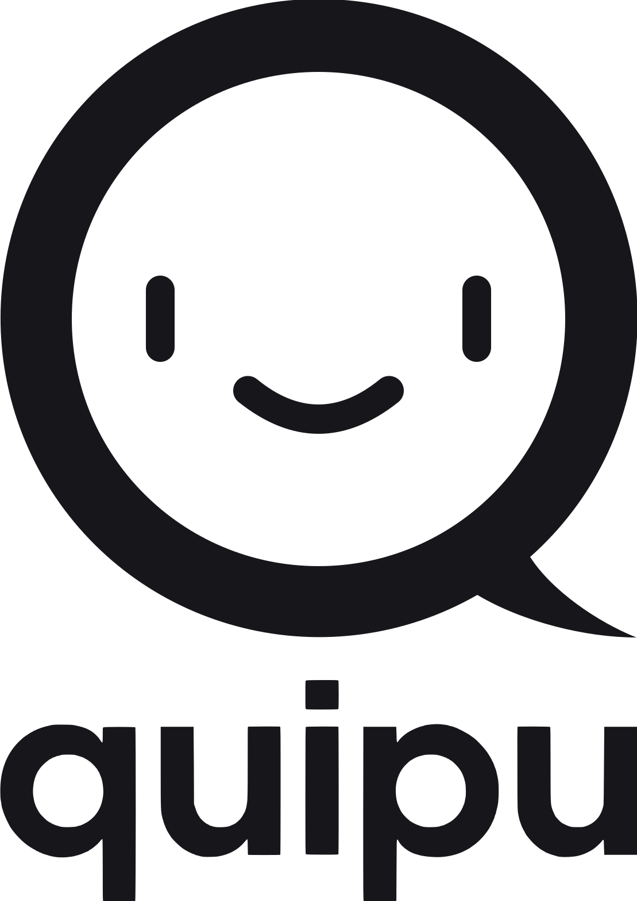

Bare positive innlegg
Hvert innlegg er enten noe barnet er glad for, har lært, vil takke noen for, eller har laget. Et filter stopper stygge ord, telefonnumre, e-post, adresser, lenker og brukernavn fra andre apper før noe blir delt.

quipu er en sosial kanal for klassen, laget som det motsatte av X, TikTok og Snapchat. Her er valgene vi har tatt, og hvorfor appen heter det den heter.
En quipu (på quechua khipu, som betyr «knute») var inkaenes måte å ta vare på og sende viktig informasjon. Den besto av en hovedsnor med mange hengende snorer. Knutene på snorene lagret tall i et titallssystem: hvor knuten satt, viste om det var enere, tiere eller hundrere. Fargen på snorene hadde også betydning.
Quipuene ble laget og lest av opplærte folk, khipukamayuq, som hadde ansvaret for at det som ble registrert, var riktig. Løpere, chasqui, fraktet dem videre til andre deler av riket. Det var altså et system som var bygget på tillit, der folk med ansvar passet på det som ble delt.
Det er det vi vil at quipu skal være: mange små tråder, ett innlegg hver, som henger sammen i én felles snor for klassen, og voksne som passer på.
Dette er grepene forskere, myndigheter og barneorganisasjoner oftest peker på som skadelige for barn.
Hvert innlegg er enten noe barnet er glad for, har lært, vil takke noen for, eller har laget. Et filter stopper stygge ord, telefonnumre, e-post, adresser, lenker og brukernavn fra andre apper før noe blir delt.
Barn ser bare innlegg fra gruppene de er med i, for eksempel klassen. Man blir med i en gruppe med en invitasjonskode som de foresatte deler med hverandre.
Barn kan ikke registrere seg selv. Det er alltid en foresatt som lager kontoen, slik at det er samtykke fra foresatte. Barn har ikke e-post i appen, bare et brukernavn.
Foresatte bestemmer hvor mange minutter barnet kan bruke per dag (standard 20), når appen er åpen (standard 07–20) og hvor mange innlegg barnet kan dele per dag (standard 2). Grensene håndheves på serveren, så de kan ikke omgås.
Som standard ser de andre barna et bilde eller en video først når den voksne som eier gruppa har godkjent det. En video kan være maks 30 sekunder.
Bilder og video fra mobilen inneholder ofte GPS-posisjonen der de ble tatt. Vi fjerner den, og annen skjult informasjon, før noe lagres.
Når et barn sier fra om et innlegg, blir det skjult med en gang til en voksen har sett på det.
Første gang barnet logger inn, forteller vi at foreldrene i gruppa kan lese det som deles. Det står også fast der barnet skriver. Barn skal vite når voksne følger med.
quipu kjører på en server i Frankfurt. Passord lagres aldri i klartekst, bare som en hash, og foresatte kan slette kontoen sin og barnas kontoer med alt innhold når som helst.
Spørsmål, innspill eller noe som bør sjekkes? Skriv til hei@quipu.no.